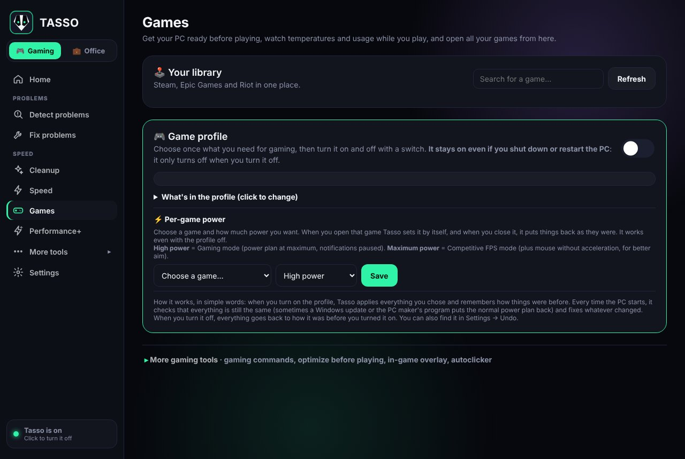

Gaming · Ready to play
More FPS, fewer worries.
While you play, Windows is busy with other things: updates, background programs, power plans that save energy. Tasso puts them aside while you play and then puts everything back as it was.
